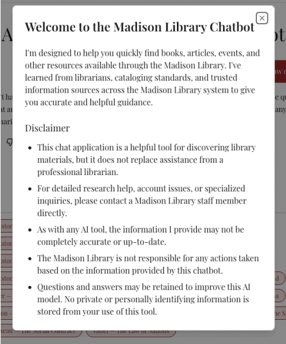

Building an AI research assistant that only says what its sources actually say
At Cornell's AI Innovation Lab, our team built a chatbot that answers legal and historical questions using the books James Madison actually owned, and I worked on making sure it stayed honest about what those books did and didn't support.
- Problem: A general-purpose chatbot can answer a legal or historical question fluently but pull from anywhere, misattribute an idea, or invent a citation entirely.
- What I did: Built and evaluated two RAG architectures grounded in James Madison's actual library, engineered IRB-compliant consent and testing infrastructure, and led the public accessibility review of the interface.
- Key finding: The formal accessibility review turned up real, fixable issues, missing labels, a keyboard trap, and contrast below WCAG AA, that would have shipped unnoticed without structured evaluation.
- Impact: Helped move the assistant from a working prototype to a source-grounded tool that's actually ready for real, public research use.
The problem
A general-purpose chatbot can answer a question like "how does Vattel reconcile sovereignty with the law of nations?" fluently, but it might pull that answer from anywhere on the internet, misattribute an idea, or invent a citation entirely.
We wanted a system that would find the relevant passage in Madison's actual library, reason across it, and tell the user clearly when the corpus simply didn't have enough information to answer. That meant retrieval quality mattered just as much as the quality of the generated text.
My role
This was a collaborative research project, so I want to be precise about what was mine versus the team's. Our team built and iterated on the retrieval architecture together; my specific contributions were:
- Evaluating chatbot responses against expected answers and the context retrieved to support them
- Testing how the system handled nuanced legal and historical questions, not just simple lookups
- Helping investigate hallucination and context-fidelity risk through adversarial testing
- Working on the IRB submission and finalizing consent language, using my IRB training
- Helping design the feedback system for the public-facing version of the tool
I didn't personally build the retrieval pipeline end to end; "our team tested" is accurate; "I coded the RAG system" would not be.
How the system evolved
V1: a simple pipeline broke immediately
The first version split books into 20-page chunks, classified each chunk as relevant or not, and sent everything "relevant" to GPT-4o. On a hard question, that prompt hit 1,318,551 characters, well past the model's 1,048,576-character limit. The bottleneck wasn't the answer-generation model. It was that our relevance classifier was too generous: if nearly everything gets marked "relevant," retrieval has stopped doing its job.
V2: retrieve passages, not whole chunks
We changed the pipeline to extract only the specific portions of a chunk that actually answered the question, instead of forwarding entire pages. Better retrieval turned out to matter more than a bigger model.
Adversarial testing for hallucinations
We deliberately tried to break the system: questions with no answer in the corpus, questions built on false premises, and (the most interesting test) a deliberately altered version of a text that misrepresented what its author actually argued. The chatbot followed the altered text rather than "correcting" it from its own pretrained knowledge, which was the behavior we wanted. For this kind of tool, the right answer to "what does the model remember from the internet?" is: irrelevant. The question is what the corpus says.
Found a metadata gap
Strict grounding created its own failure mode: when a retrieved passage arrived without clear source information, the model would sometimes correctly say "I don't have enough data" even though the text technically supported an answer. We fixed this by making sure author and book metadata traveled with every retrieved passage.
Rethought chunking and tried long-context models
Fixed 20-page chunks could cut an argument in half mid-chapter, so we experimented with chapter-based chunking instead. We also tested Gemini's long-context window as an alternative to chunk-and-retrieve entirely. The final "V3.1" architecture used Gemini 2.5 Flash to extract relevant passages from full books, then had GPT synthesize the final answer from that evidence, a hybrid approach that outperformed either model alone.
See it in action
A short clip from the live tool: retrieving across the library, citing what it found, expanding the retrieved passages behind an answer, and correctly refusing a question the corpus can't support.
Making it ready for real users
Once the team decided to open the tool to actual researchers, the project stopped being purely technical. Collecting interaction data from users meant thinking about informed consent, what data we were collecting and why, and how often to ask for feedback without making the tool annoying to use. I worked on finalizing the consent language and the IRB submission, and specifically on how consent should be presented inside a conversational interface rather than as a separate legal document people skip past.
We also designed a layered feedback system so casual users and serious researchers could both participate without the same amount of friction: a quick thumbs up/down, star ratings for more detail, and an optional free-text field for anyone who wanted to explain what worked or didn't.

Accessibility became part of the evaluation
A formal Cornell accessibility review of the public interface turned up real issues: missing labels on the consent control and message input, a keyboard trap in the About modal, and contrast below WCAG AA in parts of the consent flow. Because this tool was meant for public research use, that wasn't a cosmetic detail to fix later. It was part of whether the tool actually worked.
Results
What I learned
Retrieval is often the real AI problem, not generation; our first major failure had nothing to do with the language model's writing ability. And telling a model to "cite your sources" doesn't mean much if your retrieval pipeline doesn't actually preserve source metadata in the first place. Responsible AI here meant more than avoiding hallucinations; it meant thinking about consent, accessibility, and what users actually expect from a public research tool.
How I'd evaluate it differently
- Build a formal evaluation benchmark earlier (question, ground-truth passages, expected concepts, required citations, difficulty tier) instead of reviewing answers manually
- Track retrieval precision, recall, citation accuracy, and refusal accuracy separately, not just "does the answer look right"
- Score retrieval quality and answer quality independently, since a bad answer can come from bad evidence or from bad synthesis of good evidence
- Run accessibility checks throughout development, not as a single review near the end